Unlighted
-
- 2D Layout (Figma)
- Blockout
- Environment Storytelling
Level Design
Unity Development
Writer
Design Documentation
Development time: 1 year 6 months
Team: 3 people
The Game
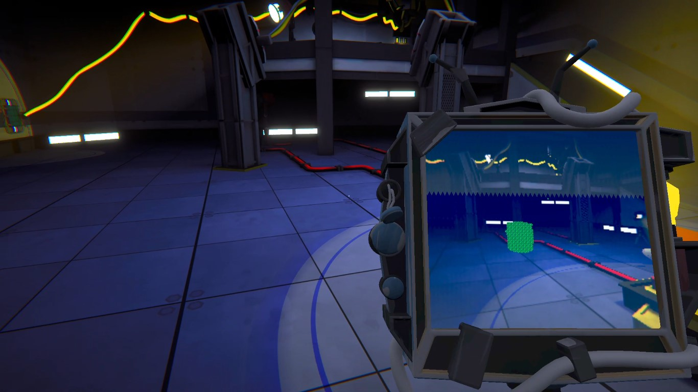
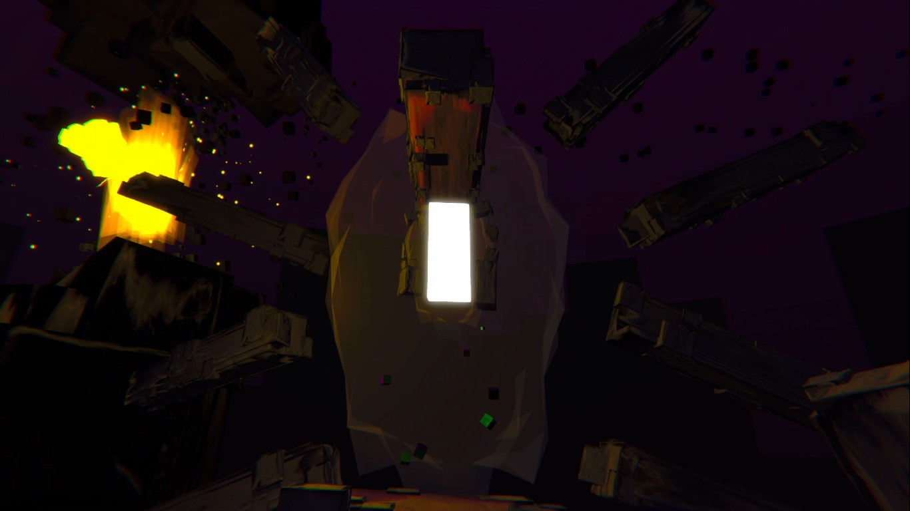
Roles
-
2D Layout
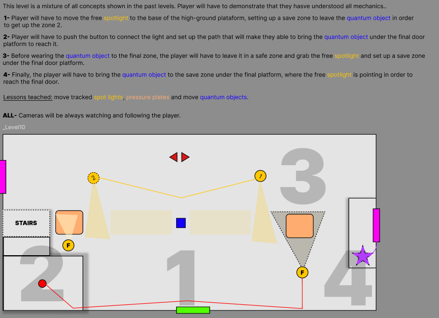
I always use Figma, to display the 2D Layout and the first idea of the level. Due to further iterations, the final level didn't end up being the same as the layout, but we always sticked to the initial thoughts of the puzzles.At this level, the player already overcame 9 tests and know the mechanics pretty well: move manual and automated lights, activate pressure plates, discovering the invisible materials... So the objectives were:
- Combine lights with a defined path to unlock a new objective.
- Break up the previous combination to access the unblocked path.
- Interact multiple times with the invisible elements to trigger different paths.
-
Blockout
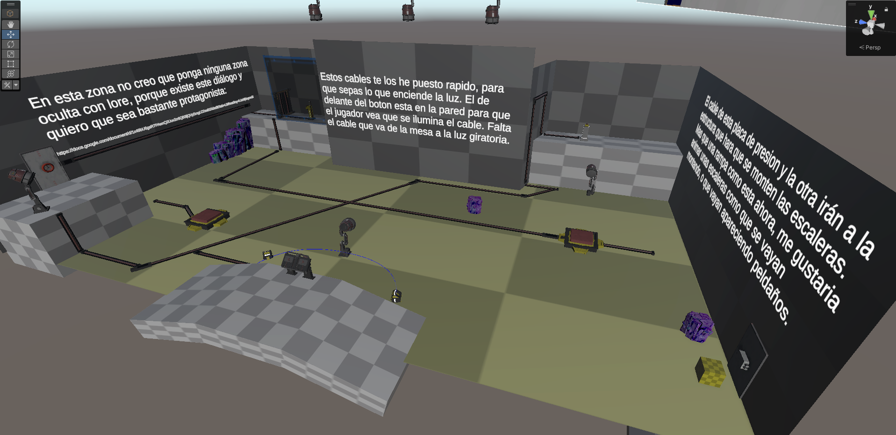
For the blockout, I used Unity. At this point, some iterations were already done, mainly to adapt the level to the real movement and abilities of the player.The most notorious iterations were:
- Addition of two more invisible elements. They increased the difficulty, since we realized that after playing 9 levels, the level should be more challenging.
- Separate the button to open the door from it. This made the player's thinking process more challenging. They would need to think how to reach the button and then how to reach the door separetly.
- Addition of hidden stairs to access the door. Originally, the player would have to jump on the invisible element to reach the door, but it didn't feel right and never had done it before, so stairs triggered by a pressure plate sounded more familiar.
-
Final Look
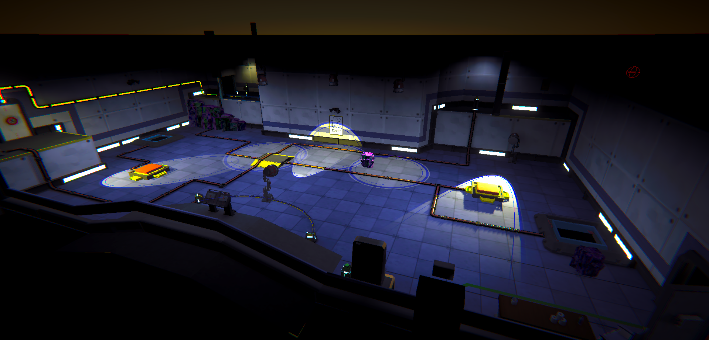
Once the artist enters the process and bring the level to life, it's easier to see where it fails and what final touches need to close it.One important pain point we detected was that, in this level, the player was prone to lose the invisible elements easier than in other levels. If the player did that, there was no way to get them back, since all lights were attached to a defined path. To solve that, we added a machine to detect the lost invisible elements and return them into their original place, it served as a reset-level button.
-
2D Layout
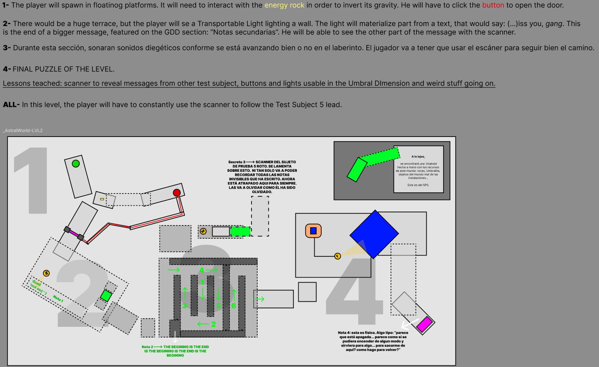
These levels are located in an alternate dimension, so they are super fun to create, since I am able to go crazier and play around weirder features to the game. The base of these are: gravity change, exploration and non-euclidean puzzles.This particular level was the second of this kind. The first was to teach the player how to change gravity, so I could go a little further in this one:
- Combine light mechanics with gravity changes.
- Non-euclidean laberinth. At first, look as a no-way-out laberinth, but if they use the scanner (hand device used to see invisible elements) they see some numbers in the way. Following by order will solve the laberinth and the player will appear at the oposite side of it.
- Lore addition around Test Subjects trapped in this alternate dimension.
-
Blockout
In this level, bigger than the others at the moment, the communication with my peers is more important than ever. Alongside the environment artist, we though of a note-code to integrate it in the scene:
- Green text: Means this will be invisible text that the player will be able to see through the scanner.
- White text: My comments, guiding my peer when it comes to add props and lighting.
- White text (Drive links): As I writed the scripts and lore of the game, I letted him know when and what note will appear on each section of the level. I would paste the Google Drive's link to the note.
Furthermore, some iterations were done to the level:
- Laberynth and secondary path's position were mirrored, so to reach the secondary path the player needed to go further away from the spawnpoint, not closer. The objective of this decision was to make the laberinth path look principal, and the other more secondary.
- An invisible path was added towards the far away shack for storytelling and coherence reasons (how did that person go there?"). However, it was a clear decoration: the player knew they could not reach that path and would not attempt to go there.
-
Final Look
Thanks to the good communication, all the tiny details persisted over the layout, through the blockout and to the final level that benefits the level design and user experience, such as:
- The exit monolith is visible from the first button the player interacts with, so it serve as a landmark.
- From where the note is found the user can still see the exit, as well as some structure far away (narrative).
- In the laberinth entrance there is a suspicious sprite showing the player's scanner to encourage the player to use the device to see the hidden order of the laberinth.
We had multiple players misunderstand the principal and the secondary path. Because of that, we changed more things:
- Added light inside the laberinth to lead the players eye inside it.
- Hide even more the secondary path, with floating objects.
- Added a sound clue at the end of the laberinth to guide the player. The visual representation of the sound (a motor) can be seen from the secondary path to indicate the principal path.
-
2D Layout
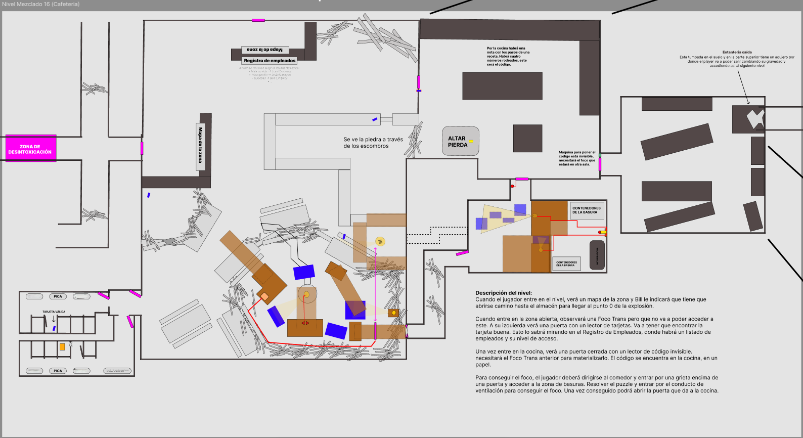
In these levels, we wanted the player to feel lost, so I made these levels bigger, with more rooms to explore. We promoted the exploration with the Umbral levels before, so they were familiarized with it at this point. Inside this chaos, I though about using some known facility rooms, such as offices or kitchens, so the player could follow some logic among the disaster. This helped their orientation. At the end, I wanted them to feel lost, not to get lost.Mechanically, from the start of the game, we wanted the player to be able to invert gravity inside the facilities. To do so, we blended these levels with the alternate dimension (Umbral) so narratively made sense.
-
Blockout
We wanted the spaces to talk by themselves. They needed to explain the collision between dimensions, and how the Umbral Dimension was infecting the common world. This was achieved getting the unknown dimension appear in counted locations and showing a spread around the common world. That way I also differentiated the areas where the player should change gravity to solve the puzzles and when it was not necessary to do so.
For the blockout itself, I used different colors for the various structures that helped us differentiate the dimension zones, although they were able to change gravity whenever they wanted.
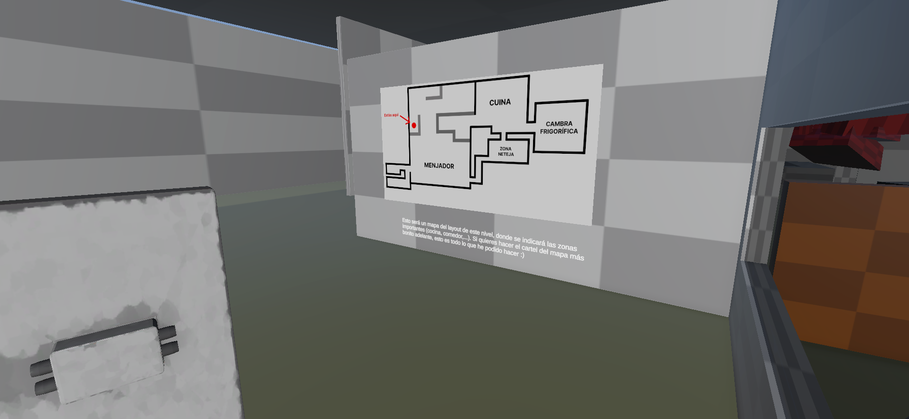
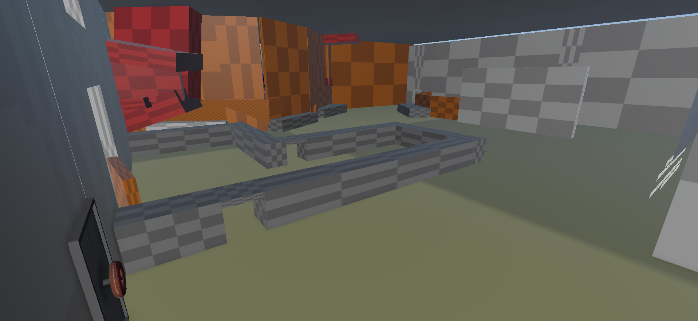
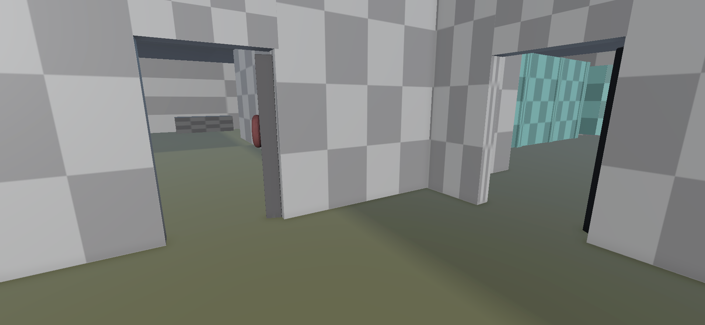
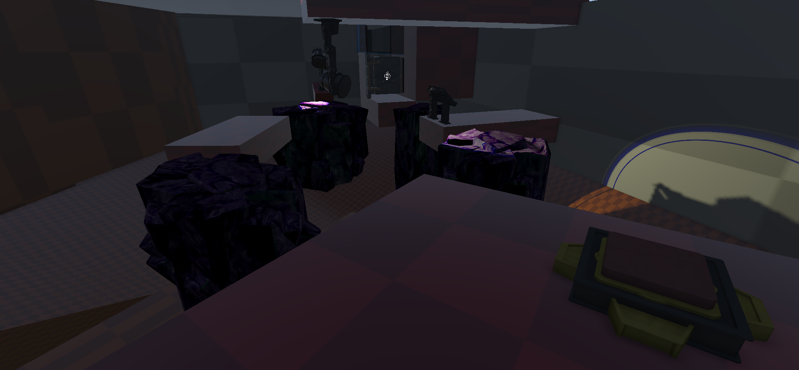
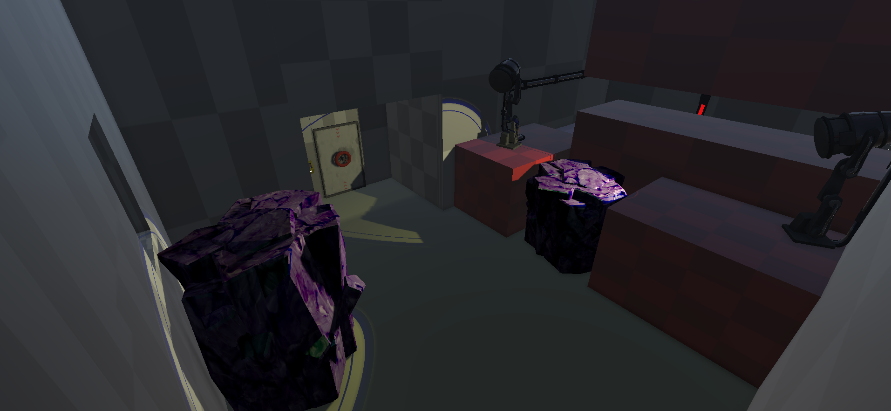
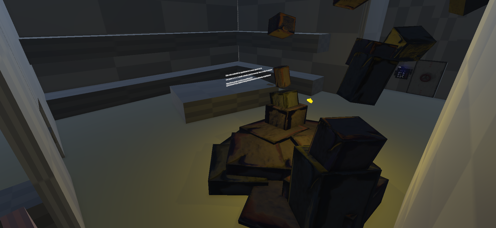
-
Final Look
This levels was one of the lasts, so we needed to blend the mechanics and make them coherent in the worldbuilding. The features that helped to preserve the plausability are:
- The Umbral Dimension infecting the common world. This helped using the gravity ability without breaking inmersion.
- Displaying a visual representation of the level to the player. To avoid the player getting lost, we showed the map of the area. When they saw it, the narrator explain them their plan and objective of the level.
- Some code keys are now invisible. Not only they needed to figure out the code of the door to finish the level, but they also needed to materialize the missing code keys to write it.
- Displayed a similar level from the beginning, but modified. One of the puzzles of the level remembered to one of the previous tests. When the player tried to reproduce it, they failed; two modifications were added: added a new light to play with and a timer to reach the goal of the puzzle.
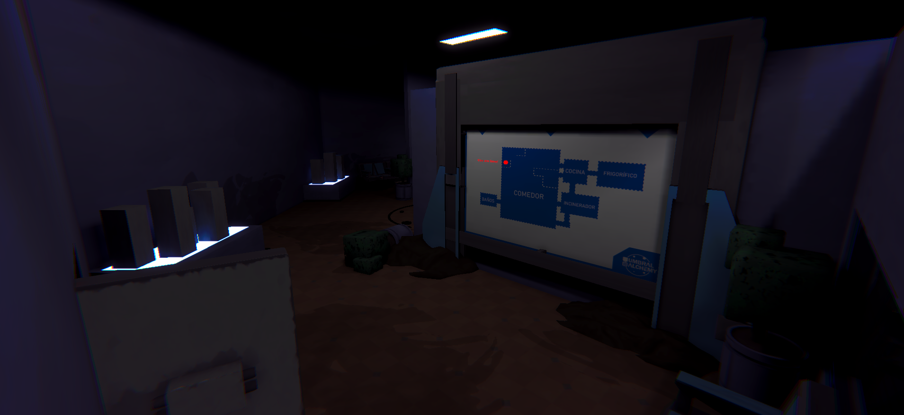
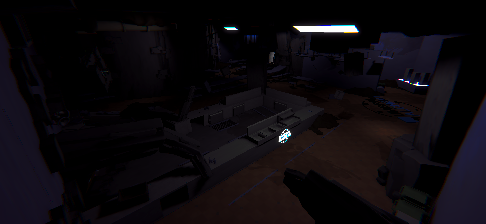
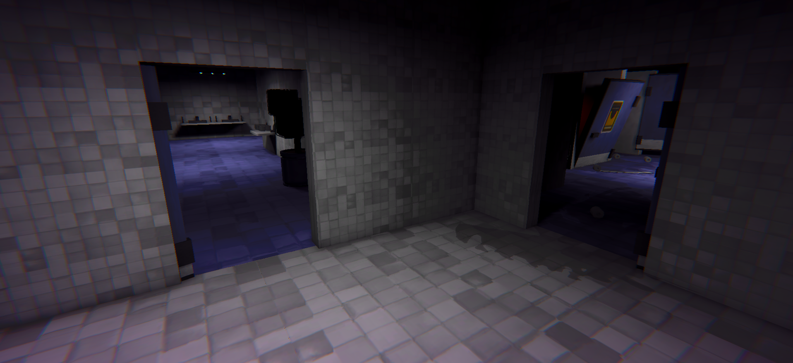
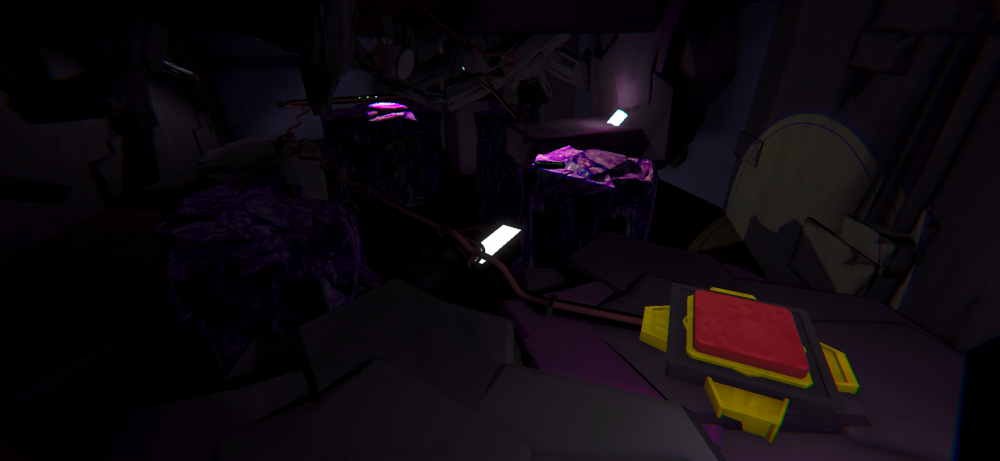
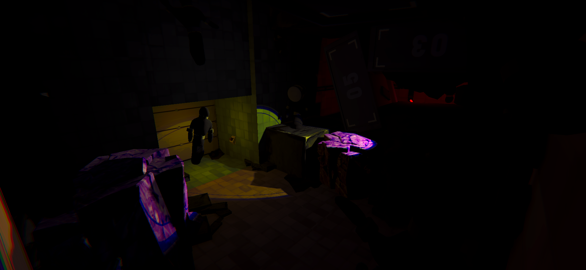
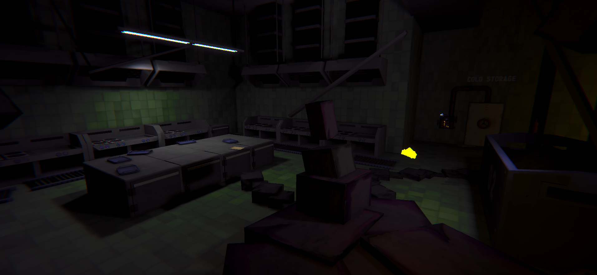
-
2D Layout
The main idea of this final level was to have our two main characters (narrators) fight each other, while the player was just in the middle, trying to help one or the other. These characters fought by using their divine powers by moving walls, assets and floors from the user's sorroundings.
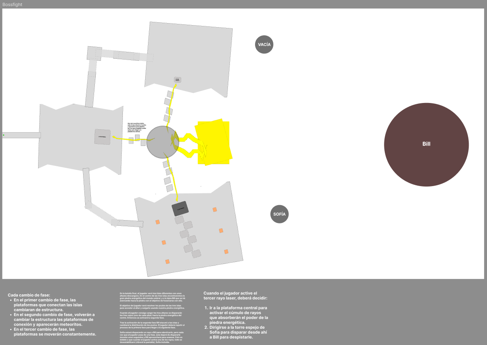
The image in the right was the first idea of the level: limited in three main areas and solving puzzles around those to defeat an external force, while it just attacked the user. After a few days of iterating, I felt mixed feelings about it. I just didn't find a place for the level I was creating inside our game. I was just playing Control (Remedy Entertainment, 2019) at that time when the Ashtray Maze level showed to me what I was looking for: the world itself guiding the player and, at the same time, playing with them. To try this new idea, I stepped directly into the blockout and built part of the level I had in mind, where the player escaped from a self-moving world. -
Blockout
The idea of the structures being alive and a soundtrack matching the player's steps fascinated me and I finally applied it to Unlighted. Once I knew clearly what to do, I started blocking the whole level and talking with our composer, since I wanted the music to match the tempo of the level.
The following video was a WIP little prototype of how I wanted the final level to look, which I shared with the composer to share the idea.
After a few talks with the composer, a more advanced blockout was build, with some dialogues already integrated. I iterated the first blocking:
- Avoided backtracking once the decision was made (falling wall behind the user).
- Reduced the gravity changes to only two at the start. In that little amount of time, four gravity changes are too much.
- Added apath leading to the materialized material once the light is on. Before of that, the player needed to go back where they come and was tedious.
- Built half of the level: added new puzzles, most of them quick-solving, one of them more thoughtful.
-
Final Look
Before reaching this final level, the player needed to decide between two ways: help Bill or Sofia. Depending on their decision, one character would block their progression and the other would permit them to advance. Bill was represented by the Umbral Dimension elements (rocks and dirt) and Sofia was represented by human elements (facility walls and props). The first one symbolized Bill's attach to the unkown invasor, while the second one symbolized the human interest to stop the external invason.
The following video shows the entire level without music, which was still not part of it. Post-processing and finessing is also missing.
Level Designer
Goals
We wanted the player to feel trapped, observed and guided most of the time, but feel rebel at some moments and more clever than the guide. Because of that, I thought on three types of levels: tests, to show the control of the guide (and the game); umbral to show players' rebelty and give them more freedom (exploration); and facilities, escapism levels. In addition, we also featured a final level that worked as a kind of bossfight.
| Type | Description | Quantity |
|---|---|---|
| Tests | These levels served as a tutorials, they were more guided and presented most of the game mechanics our game had. Since the mechanics were weird and may be difficult ot understand for some people, it was the perfect way to match the eerie story and control the players' frustation. | 14(not consecutive) |
| Umbral | These levels interesct with the 'tests' ones. They break the monotony of the closed rooms and bring fresher mechanics to the game. At the same time, these feature a new different dimension and more open levels, so there is a lot to explore. These are rich in storytelling. | 3(not consecutive) |
| Facilities | When all mechanics are setted up and the story advances, the player escapes from the tests and starts to walk through the facilities. The levels are bigger than before, showing destruction and open paths for the player to explore. Here, the different worlds blend and all mechanics can be used together. | 3 |
| Final | To finish the game, we wanted a big finale that wrapped all the mechanics learned during the game. This final boss was not about fighting, but about escaping using all the abilities in the player's hands. This features a fight between Bill and Sofia, the two main characters, where the player has to decide who to help. | 1 |
| 21 | ||
Levels
Different kind of levels required different approaches, but I always started them thinking some bullet points about their purposes and the 2D Layout in Figma. Then I transformed it to a 3D Blockout and, finally, the artist decorate them. Among the process, multiple iterations always were done to assure coherent and enjoyable levels. Below, I'll talk about some of the levels I designed from the layout to the final look.
Test N10 (2D Layout / BlockOut / Final look)
Umbral LVL2 (2D Layout / BlockOut / Final Look)
Facilities (Second Level)
Final level (Bossfight)
Writer
Once we had the fantasy of the game and some ideas of the plot, I was in charge of writing down all the cutscenes and dialogues of the characters. In addition, I also managed the Voice Over recordings and the audio edition.
To end, I writed all the secondary notes that the player can find across the levels. These serve as a complement of the main dialogs, and helps the player to know better the storyline of the game, which could had been harder to understand without them.
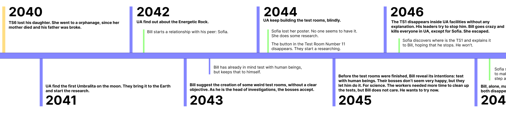
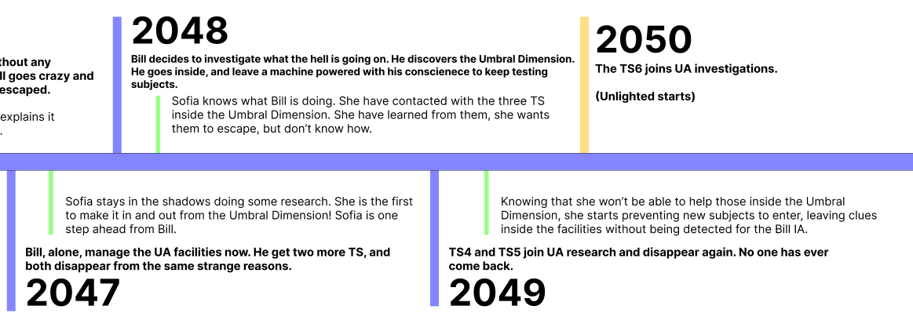